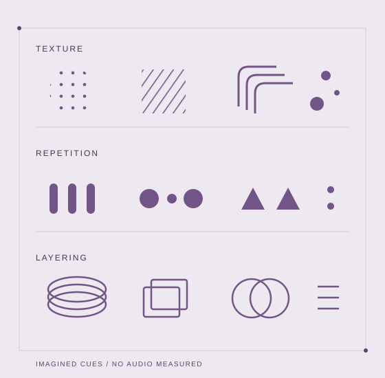
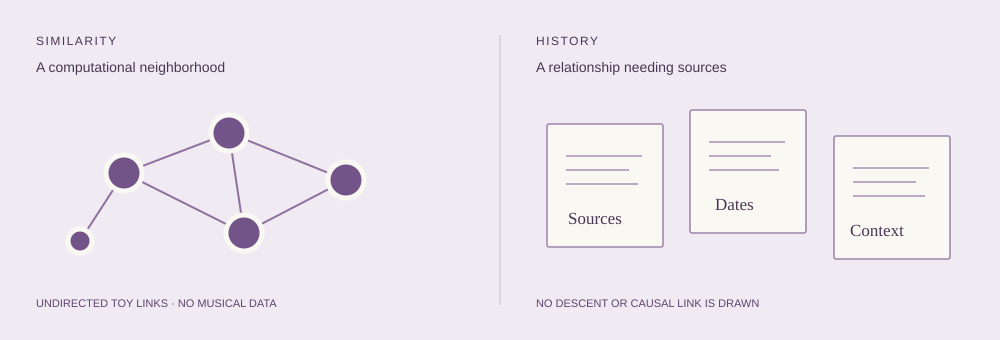

Acoustic structure
Local prototypes and computational audits explore how representations organize recordings. Parameters, normalization and temporal context can change the neighborhood.
Exploratory computationVISUAL EDITION V6 · RESEARCH IN PROGRESSOffline reading edition.
Music, listening & computational relationships
Mapping musical relationships beyond genre labels — and asking what a graph can actually tell us about music, listening and change.
Explore the synthetic graphA research project by ANDreaLiuz
Independent perceptual validation pending

Texture, repetition and layering offer ways to listen across genre boundaries. The research asks which connections a representation preserves — and what it leaves for listeners and cultural evidence to explain.
01 / The research question
Audio similarity can reveal a useful neighbor. It does not automatically identify a shared musical experience, a historical influence or a future favorite.
This project explores recording-level representations, neighborhoods and communities, while separating computational structure from independently validated musical relationships.
Earlier prototypes used established audio descriptors, Leiden community detection and a separately computed Ward hierarchy. The research now asks which relationships those tools preserve — and what evidence would be needed to trust them.
Read the research questionsOn a narrow screen, scroll sideways to compare both questions.

A conceptual method map, not a completed validated pipeline.
Identity, edition, excerpt and production context.
Descriptors or embeddings retain some details and lose others.
Similarities → neighborhood graph → Leiden communities.
Representation → separate Ward hierarchy.
Listener judgments, historical sources or longitudinal tests, matched to the claim.
Leiden labels did not generate the Ward tree. The explorer below runs neither algorithm.
02 / A safe, synthetic illustration
The positions stay fixed. Only the edges change. Two invented feature views let us inspect the consequences of a modeling choice.
Scroll sideways to inspect the full graph. The selector also lists each node's neighbors.
Each invented node has two three-coordinate nonnegative vectors. The score is a weighted mean of cosine similarity within each view. Each node retains up to k other nodes at or above the threshold; the graph draws the undirected union of those choices. Node positions follow a fixed circle and do not encode distance.
The vectors are deterministic arithmetic, with designer-assigned groups. This is a new teaching example, independent of the original research implementation. It cannot establish a real musical community or historical relationship.
Inspect the standalone generator03 / Evidence and boundaries
A useful research map makes its unanswered questions visible. Each step needs its own evidence.
Local prototypes and computational audits explore how representations organize recordings. Parameters, normalization and temporal context can change the neighborhood.
Exploratory computationIndependent judgments on the exact material are needed to test what the measured proximity means to listeners.
Validation pendingHistorical influence needs historical sources. Preference change needs repeated liking, listening opportunity and strong baselines.
Research hypothesisA community is not an ancestor.
A neighbor is not a future favorite.
“Genealogy” remains an organizing metaphor. This project does not claim a validated historical tree, causal preference change, a new embedding algorithm or improved recommendation performance.
Read the full research status04 / Read further